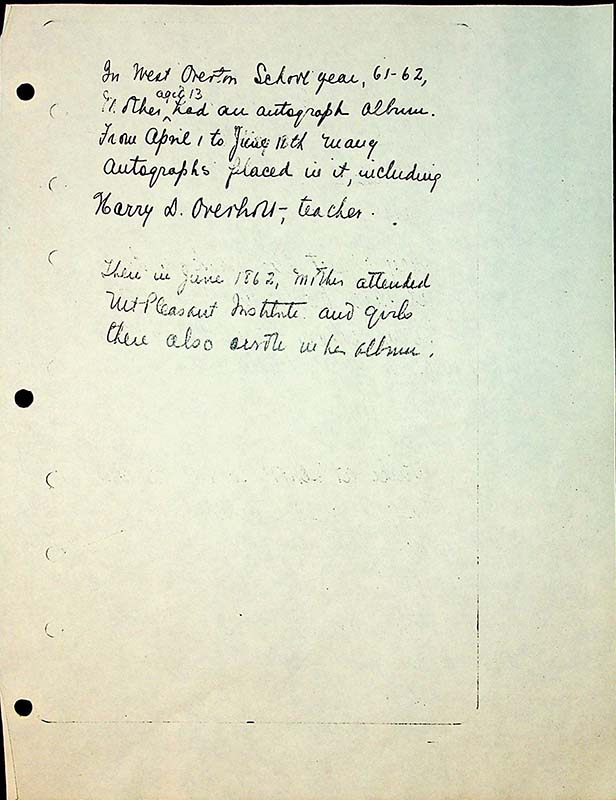

In West Overton School year, 61-62,
Mother^ aged 13 had an autograph album.
From April 1 to June 18th, many autographs place in it, including Harry D. Overholt- teacher.
Then in June 1862, Mother attended Mt. Pleasant Institute and girls there also wrote in her album.